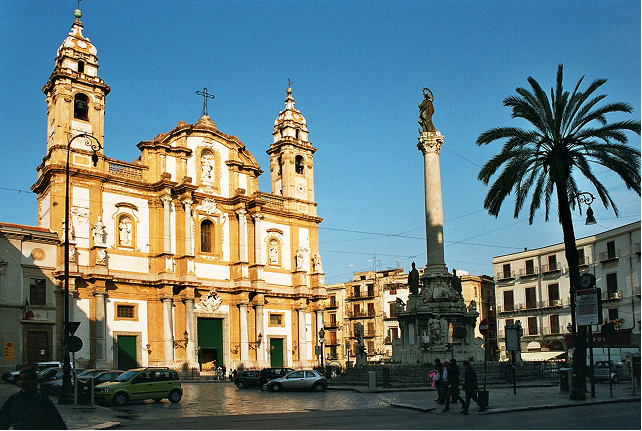
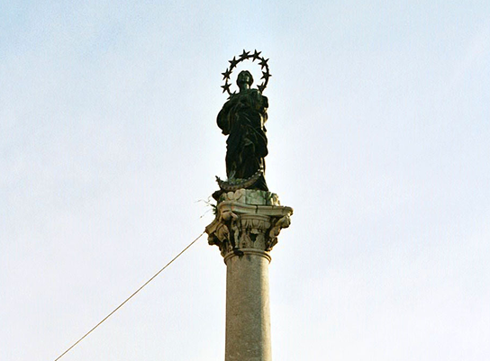
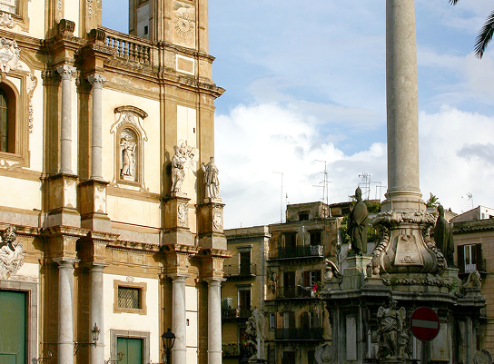
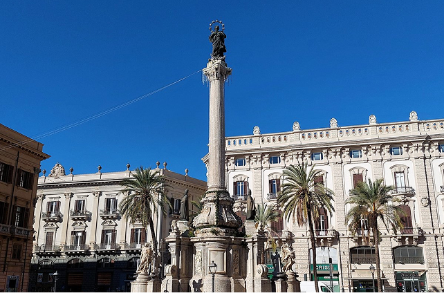

storia e architettura
Piazza San Domenico è una delle piazze più affascinanti e significative della città di Palermo, un luogo in cui storia, arte e vita urbana si incontrano creando un’atmosfera ricca di fascino e memoria. Situata nel cuore del centro storico, lungo uno degli assi principali della città antica, la piazza rappresenta da secoli un importante punto di riferimento per la comunità palermitana e per i visitatori che desiderano scoprire il volto più autentico e monumentale della città.
Dominata dall’imponente presenza della Chiesa di San Domenico, uno dei più importanti edifici religiosi di Palermo, la piazza conserva ancora oggi il carattere solenne e rappresentativo che ha assunto nel corso della sua lunga storia. Il grande spazio urbano si distingue per la sua eleganza e per l’armonia architettonica che lo circonda. Al centro della piazza si erge il monumento dedicato all’ammiraglio Carlo V, mentre tutto intorno si affacciano palazzi storici che testimoniano il ruolo centrale che questo luogo ha avuto nella vita politica, religiosa e sociale della città.


la piazza oggi
Passeggiando nella piazza si percepisce chiaramente la stratificazione storica che caratterizza Palermo: epoche diverse convivono nello stesso spazio, raccontando secoli di trasformazioni urbane, culturali e artistiche. Piazza San Domenico è stata per lungo tempo un importante luogo di incontro e di scambio, frequentata da cittadini, commercianti e viaggiatori. Ancora oggi conserva una forte vitalità, grazie alla presenza di locali, caffè e attività che animano la zona durante tutto il giorno.
Nonostante il continuo movimento, la piazza mantiene un’atmosfera suggestiva e quasi monumentale, capace di trasmettere il senso della storia e dell’identità della città. Visitare Piazza San Domenico significa immergersi in uno dei luoghi più rappresentativi di Palermo, dove la maestosità dell’architettura si unisce alla vita quotidiana del centro storico. Qui il passato e il presente convivono in equilibrio, offrendo a chi la attraversa uno spazio ricco di bellezza, cultura e memoria urbana.
